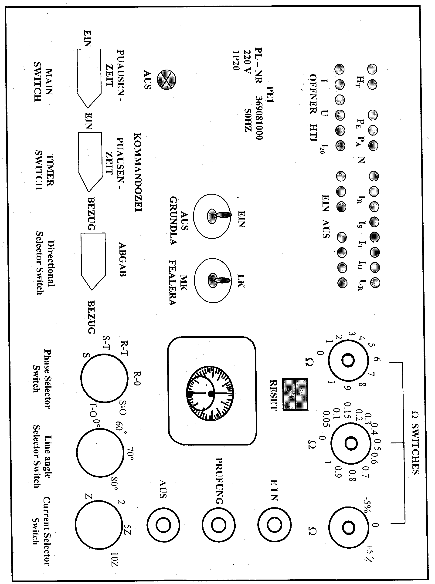

| Protection |
Distance Relay
RD110
Hiem Electric
Issued to: El ASHER
Using Test Set PE1
Date Approved: 29 Dec 1996
Date to be Reviewed:
Dec 2001|
|
|
|||
| Equipment: Distance Relay RD110 Hiem Electric |
Document No.: DsR-037-r0 | |||
|
Issued to: El ASHER |
||||
| Status: APPROVED | ||||
| Procedure: Using Test Set PE1 |
Date Approved: 29 Dec 1996 |
|||
|
Date to be Reviewed: Dec 2001 |
||||
Introduction
The RD110 relay is an electromechanical three-phase distance relay, which is used to protect many 33, 66 and 132KV lines at EEA substations. The relay has three zones of impedance protection each with a different timing step. The relay has one directional element and one measuring element, which work in conjunction with all zones. The relay measures phase to phase and phase to ground faults. It is manufactured by EAW.
This procedure details the steps required to completely check the proper operation and calibration of the RD110 relay. It is recommended this procedure be carried out on a yearly bases. This work be carried out section of this document is divided into 3 sections.
The first preliminary steps to prepare for relay testing describes the activities required prior to testing. Some of these steps could be performed days before the actual test. The second section Preparation for testing describes the steps to set up the equipment for performing the actual tests. The third section is the actual test.
The document is formatted the way to minimize the possibility of error causing personal injury or damage to equipment.
The first draft initialed & tested by eng. Mohamed Ghareeb Radowan at 29 Dec 1997 at El ASHER
Safety Precautions
A work permit must be issued, qualified maintenance staff carry the suitable safety ID category,
Safety fence with caution marks surrounding the work area is required,
Personal protective equipment must be used as safety shoes, and safety Helmet ... etc.
Ensure that Line isolation is done.
Make sure CT secondary circuits are shorted and VT secondary circuits are opened before injection.
Tools and Equipment
Test set type PE1
Voltmeter
Clip - on ammeter
Phase Rotation meter
Test leads, Ammeter (5 AMP)
Secondary Injection Test Set.
Work to be Carried Out
Preliminary Steps to Prepare for Relay Testing
Review technical reference material: Manufacturer’s manual.
Obtain copy of relay setting from field maintenance file and compare it with the setting on the relay.
Obtain outage for line protected by this relay.
Check that the bus and line disconnect switches are opened and tagged.
Inspect the CT secondary circuits, the VT Miniature Circuit Breakers (MCB’S), and all cabling supplying the relay.
Use the station drawing to isolate the following:
Breaker trip coils.
- Breaker failure scheme associated with this relay.
- Disturbance alarms and fault recorder associated with this relay.
Testing the Relay and Protection Output
Carefully follow these test procedure steps from page 2 to Page 7.
Verify the test results match the relay setting, if not consult technical services.
Test trip the breaker associated with the relay.
Prior to Starting Testing Procedure (s) Ensure the Following Steps
This procedure is used to perform off load relay testing.
Check that the Panel Nameplate agrees with the EEA designation of the line that has been taken out of service for maintenance.
Check there is no AC current from CT by using clip-on ammeter.
Check there is no AC voltage from VT by using voltmeter.
Check all external connections to the relay are in good condition and check that the terminal block wires are tight.
Preparations
Make sure secondary circuits are shorted before isolating the current circuits of the relay.
Using voltmeter, check that there is DC voltage on the relay, (positive on terminal 25 and negative on 26).
Switch off the MCB for a.c. voltage from voltage transformer.
Label the wires before removing from terminals of the relay.
Remove the wires from the current terminals (1, 2, 3, 4) on distance to terminals (6, 7, and 8) of the relay.
Connect between the current terminals (1, 2, 3, 4) on distance relay to terminals (IR, TS, IT, Io) on the PE1 test set, respectively.
Connect between the voltage terminals (5, 6, 7, 8) on the distance relay to terminals (UR, US, UT, Uo) on the PE1 test set, respectively.
Connect the trip terminal (23, 24 or 21, 22) on the distance relay to terminal (Aus) on the PE1 test set.
Put an ammeter between the two terminals labeled (I) and also put a short between terminals (OFFNER) on the test set.
Set the current selector switch on the test set as shown in figure 1 to value according to rated current relay. (1 Amp = 10Z; 5 Amps = 2Z)
Set the timer switch on the test set as shown in fig 1 to vertical position (on).
Set the (W ) switches on the test set to zero position.
Set the line angle selector switch on the test set to a value according to the line angle.
Set the switch (GRUNDLAST) to (EIN) position.
Set the switch (FEALERART) to (MK) position.
Set the directional selector switch as shown in fig.1 to (BEZOG) position (forward direction)
Set the main switch to (Aus) the position.
The test set PE1 can now be energized by plugging the (Main Input) cord into a 220 Vac wall outlet.
Set the main switch to (EIN) position.
Testing Procedure (s)
Checking the Pick-Up Value of the Phase to Phase Measuring Elements
Zone 1 Test
Select phase to phase fault by turning the test set phase selector switch to (RS) position as shown in figure 1.
Turn the (W ) switches to agree with the zone one setting.
Start the test by pushing down the push button (EIN) (number 8 as shown in figure 1).
The timer will stop once the relay has picked up which indicates that the relay has operated and tripped in first zone time T1.
Change the value of zone one impedance which is set on the test set by moving the (W ) switches up or down until the relay operates in the second step.
Record the value on test sheet 1.
Note: If rk is used, it must be checked by the same method
from step 1 to step 5. (at Zone 1 Test Section).
Zone 2 Test
Set the (W ) switches to agree with the zone two setting.
Start the test by pushing down the push button (EIN). The timer will stop once the relay has picked up which indicates that the relay has operated and tripped in second zone T2.
Change the value of zone two impedance which is set on the test set by turning the (W ) switches up or down until the relay operates in the third step.
Record this value on test sheet 1.
Zone 3 Test
Set the (W ) switches to agree with the zone three setting.
Start the test by pushing down the push button (EIN). The timer will stop once the relay has picked up which indicates that the relay has operated and tripped in third zone T3.
Change the value of zone three impedance which is set on the test set by turning the (W ) switches up or down until the relay operates in the fourth step.
Record this value on test sheet 1.
Phase to Phase Test for Other Phases (ST and TR)
Repeat the above tests (Zones 1, 2, 3) by changing the phase selector switch to ST and TR, respectively.
Checking the Pick-Up Value of the Phase to Ground Measuring Elements
Repeat the above tests (Zones 1, 2, 3) in addition to the previous step “Phase to Phase Test for Other Phases (ST and TR)” by changing the phase selector switch to R0, S0 and T0, respectively.
Reverse Direction Test
Turn the directional selector switch to the vertical position (backward reach).
Start the test by pushing down the push button (EIN).
Observe that “ Qf ” flag will appear on the relay. This indicates that the fault is in the backward direction.
Measuring the Operating Times
Set the impedance on the test set to a value which equals half the normal pick up value in the First time step for phase to phase fault. This will allow a good operation of zone one of the relay.
Select phase to phase fault position.
Reset the timer on the test set.
Start the test by pushing down the push button (EIN). The timer will stop once the relay has picked up.
Record the zone one tripping time from the timer on test sheet (1).
Repeat the above test from step 1 to step 5 to measure the zone two tripping time once again but this time set the impedance on the test set to a value equal to (Z1 + Z2)/2.
Repeat the above test from step 1 to step 5 to measure the zone three tripping time once again but this time set the impedance on the test set to a value equal to (Z2 + Z3)/2.
Set the main switch of the test set to the (Aus) position.
Disconnect the PE1 test set from the power supply and Remove the secondary connections between the relay and the test set.
Checking the Over-current Starting Units
Over-current Starting For Phase R
Use secondary Injection test set to inject current between terminals 1 and 4 on the relay.
Slowly increase the current until the relay picks up.
Record this value on the test sheet.
Increase the injected current to a value 25% greater than the operating value.
Slowly decrease the current until the relay resets.
Record this value on the test sheet.
Inject current higher than the setting point so the relay picks up firmly.
Keep this value and switch off the test set.
Connect the tripping terminals (23, 24 or 21, 22) on the distance relay to the timer terminals on the test set.
Switch on the test set.
Start the test by injecting current into the relay. The timer will stop once the relay has picked up.
Record this value of time on the test sheet.
Over-current Starting for Phases S and T
Repeat the above test from step 1 to step 12 but inject current between terminals 2 and 4 for phase S and terminals 3 and 4 for phase T. This completes the test.
Remove the test leads between the relay and test set.
Return the wires, which were removed in step 5 Page 3.
Trip Test
Switch on the MCB, which was switched off in step 3 Page 3.
Request the operator to switch on the main CB of the line.
Operate the output auxiliary contact E1 by hand to trip the circuit breaker.
Check that the circuit breaker tripped.
Return Relay and Associated Equipment to Service
Return relay to service by removing the test lead connections from the relay.
Any equipment associated with the relay has been isolated should be returned to service by the following steps :
Breaker trip coils.
Breaker failure scheme associated with this relay.
Disturbance alarms and fault recorder associated with this relay.
Request Power line be returned to Service
Take crossed readings of all AC. currents and voltages supplied to the relay and compare them to those for normal load conditions.
Check that readings agree with station meters: (MW/ MVAR/Power factor/Amperes/voltages)
Place a copy of the test result in the field maintenance file
Primary Setting
X1= X2= X3=
Setting Values
r1= c1= K=
r2= q = c.t.r=
r3= Ioc= v.t.r=
rk= Ie= L= km
OVER CURRENT TEST
|
|
R |
S |
T |
|||
|
CURRENT TEST (ampere) |
PICKUP |
RESET |
PICKUP |
RESET |
PICKUP |
RESET |
|
|
|
|
|
|
|
|
|
Reset Factor |
||||||
|
TIME TEST (second) |
|
|
|
|
|
|
Impedance Test Characteristic Test
|
R-N |
S-N |
T-N |
R-S |
S-T |
T-R |
||
|
Z1 W |
calculated |
||||||
|
measured |
|||||||
|
Z2 W |
calculated |
||||||
|
measured |
|||||||
|
Z3 W |
calculated |
||||||
|
measured |
|||||||
|
FIRST TIME |
|||||||
|
SECOND TIME |
|||||||
|
THIRD TIME |
|
|
|
|
|
|
|
Location:
Relay
Designation:
Tested
by:
Signature:
Test Date:
Approved by:
Signature:
Test Date:

Figure (1): TEST SET VIEW